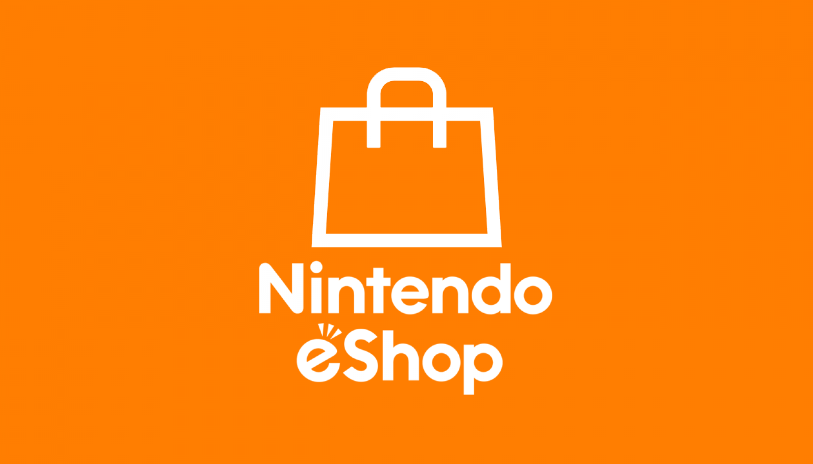
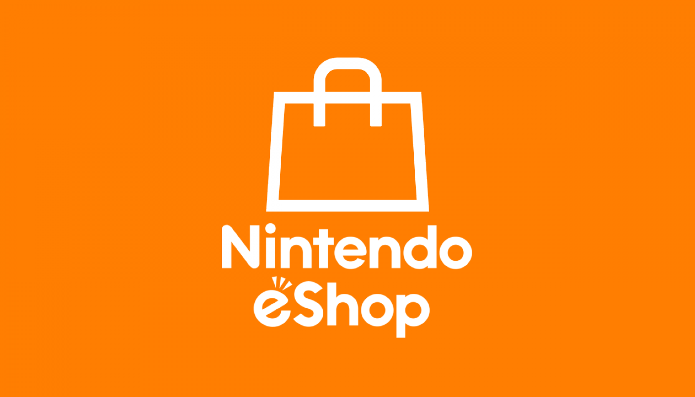

Descarga el juego en:


Hollow Knight es un juego disponible en:
El videojuego cuenta la historia de un caballero, en una búsqueda para descubrir los secretos del largamente abandonado reino de los insectos de Hallownest, cuyas profundidades atraen a los aventureros y valientes con la promesa de tesoros o la respuesta a misterios antiguos. Una secuela del videojuego titulada Hollow Knight: Silksong, se encuentra actualmente en desarrollo y está programada para lanzarse en Microsoft Windows, Mac, Linux y Nintendo Switch, aunque Team Cherry no descarta lanzamientos en otras plataformas. Las personas que donaron en la campaña de Kickstarter de Hollow Knight recibirán Silksong de forma gratuita
Descarga el juego en:
